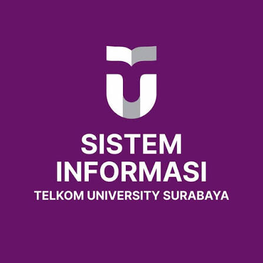

|
 |
|
Admisi |
Blog Sistem Informasi |
Dua Wisudawan Sistem Informasi Berhasil Meraih Predikat CumlaudeInstitut Teknologi Telkom Surabaya telah menggelar prosesi wisuda ke-1 secara luring di hotel Grand Dafam, Surabaya pada Sabtu (26/03/2022) kemarin, Prosesi wisuda ini merupakan yang pertama dilakukan sejak kampus ini berdiri di tahun 2018 lalu. Pada wisuda pertama ini, 16 wisudawan telah dinyatakan lulus secara sah oleh Rektor IT Telkom Surabaya Bapak Dr. Tri Arief Sardjono, S.T., MT. Seluruh wisudawan merupakan mahasiswa yang berhasil lulas dengan masa studi 3,5 tahun. Dua diantaranya merupakan mahasiswa program studi Sistem Informasi. Mereka adalah Amalina Tri Setya Berliana dan Irene Dyah Ayuwati. Keduanya berhasil menyandang gelar S.Kom dengan predikat cumlaude. Wisudawan dengan IPK tertinggi adalah Amalina Tri Setya Berliana yang tidak lain merupakan mahasiswa program studi Sistem Informasi dengan IPK 3.96. Pada prosesi wisuda ini pula. Rektor Telkom Surabaya telah menyampaikan pesannya dengan penuh sukacita. Beliau berpesan bagi seluruh wisudawan agar terus mengembankan diri sehingga dapat mengambil peran di era transformasi digital yang disruptif ini. Acara wisuda ini dapat disaksikan melalui kanal youtube ITTelkom Surabaya https://youtu.be/k-Erdksibo |
Artikel Terbaru
Artikel Populer
|
Sistem InformasiSitus resmi Program Studi Sistem Informasi Institut Teknologi Telkom Surabaya. Website ini diperuntukkan sebagai media komunikasi internal & eksternal bagi mahasiswa, dosen, dan karyawan. Program Studi Sistem Informasi sudah ada sejak berdirinya Institut Teknologi Telkom Surabaya, berdasarkan Keputusan Menteri Riset, Teknologi, dan Pendidikan Tinggi no. 733/KPT/1/2018. Website ini menyajikan informasi tentang Program Studi Sistem Informasi, profil, visi dan misi, struktur organisasi, akademisi, kurikulum, dosen, penelitian dan pengabdian kepada masyarakat. |
Tautan Penting
Tautan Bermanfaat
|
Info Kontak
|
|
Copyright © 2022 Information System Build with ♥ by Coder Team |